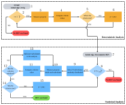
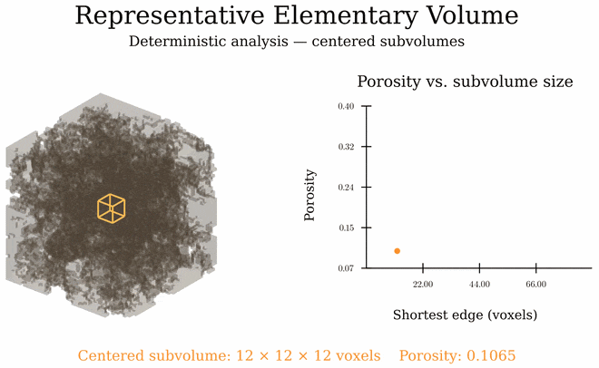
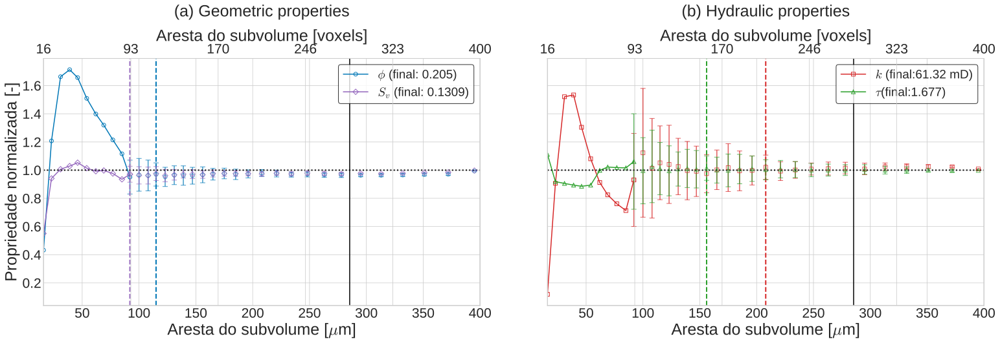

Representative Elementary Volume (REV) Analysis (lbpm_rev_analysis)¶
The degree of heterogeneity observed in digital rocks is an important factor in characterizing porous media. Advances in the resolution and sample size achievable with X-ray microtomography have made it increasingly feasible to digitally investigate larger volumes that capture the intrinsic heterogeneities of porous structures. These developments enable the identification of representative elementary volumes (REVs), beyond which the influence of local heterogeneities becomes negligible and specific effective properties of the porous medium can be reliably characterized.
The lbpm_rev_analysis routine provides an automated REV analysis for a range of
geometrical and hydrodynamic properties, as summarized in Table %s. By combining deterministic and statistical approaches,
the routine enables a comprehensive characterization of these properties, providing valuable insights for assessing the
representativeness of microtomography images and estimating effective sample volumes for subsequent numerical analyses.
Property 1 |
Property 2 |
|
|---|---|---|
Geometrical |
Porosity (\(\phi\)) |
Specific Surface Area (\(A_{s}\)) |
Hydrodynamic |
Absolute Permeability (\(K_{z}\)) |
Hydraulic Tortuosity (\(\tau_{h}\)) |
Methodology¶
The implemented REV routine combines deterministic and statistical approaches into a hybrid methodology, as illustrated
in the workflow diagram presented in rev-workflow. The deterministic stage provides an initial estimate of the REV
size at a relatively low computational cost. This estimate is subsequently used to initialize the statistical stage, which
evaluates the spatial variability of the property over randomly distributed subvolumes. The deterministic
analysis uses a default convergence threshold of \(\gamma = 0.1\). The statistical stage reports
coefficients of variation and retains the first subvolume sizes at which the
coefficients for porosity and permeability fall below this tolerance.
For a detailed explanation of the steps illustrated in rev-workflow,
expand the toggle sections below for the deterministic and statistical analyses.
 Workflow of the hybrid REV analysis, combining deterministic (steps 1–5) and statistical (steps 6–9) convergence assessments.¶ |
 GIF animation illustrating the hybrid REV analysis for porosity.¶ |


Deterministic Analysis¶
Click here to open: Deterministic Analysis
The deterministic approach evaluates a property of interest within a subvolume centered in the computational domain. The analysis is repeated for progressively larger subvolumes until the measured property becomes approximately independent of the subvolume edge length. The smallest subvolume satisfying the prescribed convergence criteria is identified as the deterministic REV.
The main advantage of this approach is its relatively low computational cost, as only one subvolume is evaluated for each edge length. However, the results may be sensitive to local fluctuations, including maxima, minima, and inflection points, potentially leading to false convergence.
The deterministic procedure, illustrated in the upper part of the workflow diagram, consists of the following steps:
Initialize the subvolume size: The initial edge length is defined as twice the average pore diameter,
()¶\[\ell_0 = 2\overline{d}_p.\]Evaluate the domain-size constraint: Before each evaluation, the subvolume dimensions are checked against the available computational domain. If the prescribed maximum size is exceeded before convergence, no deterministic REV is identified.
Measure the property: The property of interest, \(q_i\), is evaluated within the centered subvolume.
Compute the convergence criteria: Two complementary metrics are calculated to quantify the variation of the measured property with increasing subvolume size.
The first metric is the relative error (RE), defined as
()¶\[RE_i = \left|\frac{q_i-q_{i-1}} {q_i+q_{i-1}} \frac{V_{i-1}}{V_i} \right| < \gamma,\]where \(RE_i\) is the relative error at iteration \(i\), \(q_i\) represents the measured property in the \(i\)-th subvolume, and \(V_i\) denotes the volume of that sampled subvolume. This metric quantifies the local variation of the property as the evaluated subvolume increases in size.
The second metric is the convergence criterion (CC), introduced by :
()¶\[CC_i = \frac{\sigma(q_{i-m+1},\ldots,q_i)}{\overline{q}(q_{i-m+1},\ldots,q_i) } < \gamma,\]where \(\sigma\) denotes the standard deviation, \(\overline{q}\) represents the arithmetic mean, and \(m\) is the number of consecutive measurements considered. By evaluating the dispersion of the most recent measurements, this metric reduces the likelihood of false convergence associated with local fluctuations. The default value is \(m=10\).
Assess convergence and update the subvolume size: The first subvolume size for which both convergence criteria satisfy the prescribed tolerance is recorded as the deterministic REV for each property. Sizes continue to increase up to the maximum admissible domain size. The proportional growth is controlled by
SizeStep; for example,SizeStep = 0.06gives the nominal update()¶\[\ell_{i+1}=1.06\ell_i.\]The implementation also applies a minimum increment based on the average pore diameter and rounds the edge length upward to whole voxels, so the actual increase can be larger. The default
SizeStepis0.06(6%).
Statistical Analysis¶
Click here to open: Statistical Analysis
The statistical approach evaluates the spatial variability of a property by sampling multiple subvolumes distributed throughout the computational domain. For a given edge length, the property is measured in a set of randomly selected subvolumes, and the dispersion of the resulting measurements is assessed.
The current implementation repeats this sampling for increasing subvolume sizes and reports the dispersion at each size. These results can be compared with the prescribed tolerance to identify sufficiently consistent measurements.
Compared with the deterministic approach, statistical analysis is computationally more expensive because multiple subvolumes must be evaluated at each edge length. Nevertheless, it provides a more robust assessment of spatial heterogeneity and reduces the risk of identifying false convergence caused by localized features.
An important limitation arises as the subvolume size approaches the dimensions of the computational domain. In this situation, increasing overlap between sampled subvolumes can artificially reduce the measured dispersion, potentially leading to an overestimation of convergence.
The statistical procedure, represented in the lower part of the workflow diagram, follows these steps:
Initialize the statistical analysis: The edge length corresponding to the deterministic REV is adopted as the initial subvolume size, avoiding the repeated evaluation of smaller volumes that have already been assessed.
Verify the edge length: If the edge length is larger than the maximum admissible edge length, the analysis stops and no REV is found. If it is smaller, the analysis continues.
Select random subvolumes: For the prescribed edge length, \(N\) subvolumes are randomly selected within the computational domain. The number of sampled subvolumes is specified by
StatSamplesand defaults to 50 at each size. The current routine does not adapt this count based on the stability of the estimated CV.Measure the property for each subvolume: The property of interest is evaluated for all subvolumes selected in the previous step.
Compute the convergence criterion: The dispersion of the measurements is quantified using the coefficient of variation (CV), following :
()¶\[CV = \frac{\sigma(q)}{\overline{q}},\]where \(\sigma(q)\) is the standard deviation of the property measurements and \(\overline{q}\) is their arithmetic mean. Normalization by the mean provides a dimensionless measure of relative dispersion.
Evaluate statistical convergence: The computed coefficient of variation is compared with the prescribed tolerance \(\gamma\). Statistical convergence is achieved when
()¶\[0 \leq CV < \gamma.\]If the criterion is satisfied, the current edge length is identified as the statistical REV, and the procedure terminates. Otherwise, the analysis proceeds to the next step.
Increase the edge length: If statistical convergence has not been achieved, the edge length is increased according to
SizeStepand the prescribed minimum increment. The procedure then returns to step 8 to verify whether the new size remains admissible.
Run REV Analysis¶
REV analysis can be performed either alongside a single-phase permeability simulation
using lbpm_rev_permeability_simulator or independently using lbpm_rev_analysis.
Currently, neither routine supports parallel execution across multiple MPI processes.
Therefore, both routines must be executed using a single MPI process. To ensure
compatibility, set nproc = 1, 1, 1 in the Domain configuration block.
lbpm_rev_permeability_simulator¶
The lbpm_rev_permeability_simulator executable runs the single-phase flow
simulation, computes the velocity field, and then performs deterministic and
statistical REV analyses. A typical command for a single-process run is:
mpirun -np 1 lbpm_rev_permeability_simulator input.db
The standard lbpm_rev_permeability_simulator executable does not invoke the REV
routines. REV analysis is activated by the presence of a REV block in
input.db, alongside the usual Domain and MRT blocks. For example:
REV {
Geometrical = True
Hydraulic = True
SubdomainSelect = True
subdomain_size = 64
save_subdomain_raw = false
gamma = 0.1
SizeStep = 0.06
CCInterval = 10
StatSamples = 50
Seed_Anchor = True
}
To disable REV analysis in lbpm_rev_permeability_simulator, the entire REV block must
be omitted. If the block is present but no parameters are specified, the REV analysis will
run using the default parameter values.
lbpm_rev_analysis¶
The routine lbpm_rev_analysis performs REV analysis from an input geometry.
Geometrical analysis requires the geometry alone; hydraulic analysis also
requires velocity fields saved by an earlier single-phase flow simulation.
mpirun -np 1 lbpm_rev_analysis input.db
For geometrical analysis alone, the geometry is sufficient. Hydraulic
defaults to False in this routine, so porosity and specific surface area
can be evaluated without loading velocity fields. This default can also be
set explicitly:
REV {
Geometrical = True
Hydraulic = False
}
An MRT block is not required for this configuration. Set Hydraulic = True explicitly to enable
hydraulic analysis when previously saved flow results are available. However, this analysis requires
velocity fields obtained from a prior single-phase flow simulation. Currently, the routine supports only
MRT simulations performed with BC = 0, where the pressure gradient is imposed through an external body
force (e.g., F = 0.0, 0.0, 1.0e-5). For example, the following configuration block enables both property
groups:
REV {
Geometrical = True
Hydraulic = True
Seed_Anchor = True
SimulationParams = "/path/to/simulation/input.db"
VelocityPath = "/path/to/simulation/results"
VelocityTimestep = "vis3000"
}
When Hydraulic = True, the three settings SimulationParams,
VelocityPath, and VelocityTimestep must be explicitly supplied and
nonempty. If any are missing or blank, lbpm_rev_analysis prints a message
listing them and exits with a nonzero status before loading the saved files or
geometry. These settings are not required for geometrical analysis alone.
Note that, in addition to the velocity fields saved in the vis* folder, it is also necessary to provide
the path to the input.db file used in the previous single-phase flow simulation. This file is required to
retrieve the pressure drop and fluid viscosity used to calculate the absolute permeability. The supported file
formats for the velocity fields stored in the vis* folder are silo and hdf5.
Model parameters¶
For a detailed description of the REV analysis parameters, expand the section below using the toggle button.
Click here to open: REV Parameters
Geometrical and Hydraulic select the property groups evaluated in both
analysis stages. Setting Geometrical = True enables porosity and specific
surface area analysis, while Hydraulic = True enables permeability and
hydraulic tortuosity analysis. Setting either parameter to False skips its
corresponding group. Geometrical defaults to True in both routines.
Hydraulic defaults to False in lbpm_rev_analysis and to True in
lbpm_rev_permeability_simulator. An explicit setting overrides the default.
Setting both parameters to False skips both REV analyses.
gamma is the dimensionless convergence tolerance, with a default value of
0.1. A deterministic REV is identified for a property when both its relative
error (RE) and convergence criterion (CC) are valid and smaller than gamma.
The statistical analysis independently retains the first porosity and
permeability sizes with a valid coefficient of variation (CV) below gamma,
together with their respective means and window dimensions.
For example, gamma = 0.1 requires both metrics to be below 10%. A smaller
value imposes a stricter convergence requirement and may lead to a larger REV
estimate or prevent convergence within the available domain.
SizeStep controls the proportional increase in subvolume edge length in
both analysis stages. The example value 0.06 specifies a 6% increase in edge
length between successive subvolume sizes, corresponding to an approximate 19%
increase in volume. The implementation also enforces a minimum increment equal
to the larger of one voxel and the average pore diameter, and rounds the
resulting edge length upward to an integer number of voxels. Consequently, the
actual increase can exceed 6%, especially for small subvolumes. If omitted,
SizeStep defaults to 0.06. It must be positive.
CCInterval is the number of recent subvolume-size measurements used to
calculate CC in the deterministic analysis. With CCInterval = 10, CC
measures the relative dispersion of up to the ten most recent measurements;
the available measurements are used before the window is full. Increasing
this value assesses convergence over a longer history of subvolume sizes.
It must be a positive integer and defaults to 10.
StatSamples is the number of randomly positioned subvolumes evaluated at
each size during the statistical analysis. With StatSamples = 50, each
property is sampled in 50 subvolumes to calculate its mean, minimum, maximum,
and coefficient of variation (CV). Increasing this value provides more spatial
samples at a higher computational cost. It must be a positive integer and
defaults to 50.
Seed_Anchor controls the random number generator used to position subvolumes in
the statistical analysis. It defaults to True in both routines, which
initializes std::mt19937 with the fixed seed 0 and makes sampling
reproducible for the same input and configuration. Set Seed_Anchor = False
to initialize the generator with a seed from std::random_device, allowing
the sampled locations to vary between runs. This parameter does not affect
the deterministic analysis.
SubdomainSelect defaults to False. Set it to True to select
representative subdomains after the statistical analysis, using its retained
REV sizes and means. See Assessing Output Data for the numerical
workflow, input restrictions, and outputs.
subdomain_size optionally sets the selection window dimensions in voxels.
A positive integer, such as 64, specifies a cube; three positive integers,
such as 64, 48, 32, specify the exact x, y, and z dimensions. These dimensions
apply to both geometric and hydraulic selection and must fit within
the domain. If subdomain_size is omitted, each property uses its own
statistical REV window dimensions. The statistical reference sizes and target
means remain unchanged.
save_subdomain_raw defaults to false. Set it to true to save the
selected geometric and hydraulic windows as raw crops. The selection CSV and
domain databases are written independently of this setting.
SimulationParams identifies the input database used for the flow simulation.
The referenced database must contain an MRT block, from which the routine
reads the relaxation time tau and body-force vector F.
A relative path is resolved against the
directory containing the analysis input database. The
referenced file supplies only these flow parameters; keep the geometry and
REV settings in the analysis database. SimulationParams is required
when hydraulic analysis is enabled in lbpm_rev_analysis.
VelocityPath is the directory containing the saved LBPM output. Relative
paths are resolved from the current working directory. VelocityTimestep
selects a timestep directory within this path and must be supplied as a quoted
string. Both settings are required when hydraulic analysis is enabled in
lbpm_rev_analysis. Use VelocityPath = "." to select the current working
directory explicitly.
The selected timestep must contain LBM.summary and a domain mesh with
the scalar volume fields Velocity_x, Velocity_y, and Velocity_z.
The saved output must contain a single MPI domain whose dimensions match the
analysis geometry. Use the same geometry and voxel length as the original
simulation. For an MRT simulation, enable write_silo = True in its
Visualization block to save the required velocity fields in LBPM output.
The property-selection, convergence, sampling, and subdomain-selection parameters are optional.
The three saved-flow settings are required for standalone hydraulic analysis.
An empty REV block activates
geometrical analysis in lbpm_rev_analysis and both property groups in
lbpm_rev_permeability_simulator, with gamma = 0.1, SizeStep = 0.1,
CCInterval = 10, StatSamples = 50, and Seed_Anchor = True.
Omitting the entire block disables REV analysis.
Assessing Output Data¶
As an example of output data analysis, we perform REV analyses for the Berea sample
(also analyzed in 3D Digital Rocks)
using both lbpm_rev_permeability_simulator and lbpm_rev_analysis. We set
Seed_Anchor = True to ensure reproducibility of the results. The example includes
both geometrical and hydraulic REV analyses:
lbpm_rev_permeability_simulator¶
Use the following configuration to run REV analysis with lbpm_rev_permeability_simulator:
MRT {
tau = 0.9
F = 0.0, 0.0, 1.0e-4
timestepMax = 200000
tolerance = 0.00001
}
Domain {
Filename = "Berea.raw"
ReadType = "8bit" // data type
N = 400, 400, 400 // size of original image
nproc = 1, 1, 1 // process grid
n = 400, 400, 400 // sub-domain size
offset = 0, 0, 0 // offset to read sub-domain
InletLayers = 0, 0, 10 // specify 10 layers along the z-inlet
OutletLayers = 0, 0, 10 // specify 10 layers along the z-outlet
voxel_length = 5.345 // voxel length (in microns)
ReadValues = 0, 1 // labels within the original image
WriteValues = 1, 0 // associated labels to be used by LBPM
BC = 0 // boundary condition type (0 for periodic)
}
REV {
Geomtrical = True
Hydraulic = True
gamma = 0.1
SizeStep = 0.06
CCInterval = 10
StatSamples = 50
}
Visualization {
write_silo = true // write SILO databases with assigned variables
save_velocity = true // save velocity field within SILO database
}
Results are written to the current working directory. Enabled geometrical
analysis produces det_rev_geometric.csv and stat_rev_geometric.csv;
enabled hydraulic analysis produces det_rev_hydraulic.csv and
stat_rev_hydraulic.csv. The routine also writes
pore_size_distribution.csv when an analysis group is enabled. For a
detailed description of the output data printed in det_rev_geometric.csv, stat_rev_geometric.csv,
det_rev_hydraulic.csv, and stat_rev_hydraulic.csv, expand the section
below using the toggle button.
Click here to open: .csv Output Data
All four REV files are plain-text tables with a header row. Despite the
.csv extension, fields are separated by spaces, so use a whitespace
delimiter when importing them. Results are appended to existing files, and
the header is written only when a file is empty. Separate runs therefore
accumulate in the same table without a run or timestep identifier.
The suffixes _vx and _um indicate lengths in voxels and micrometres,
respectively. With \(h\) equal to Domain.voxel_length in micrometres,
x_size_um = x_size_vx * h. These columns report the reference size in the
\(x\) direction; the other subvolume dimensions follow the domain aspect
ratio, subject to integer rounding.
Deterministic geometrical output: det_rev_geometric.csv
Each row describes one centered subvolume at a successive size. The columns appear in the following order:
|
|
|
|
|
|
|
|
|
|
|
|
|
Column(s) |
Meaning |
|---|---|
|
Subvolume-size iteration, starting at zero for each analysis run. |
|
Current reference subvolume size along the \(x\) direction, expressed in micrometres and voxels. |
|
Pore-voxel count divided by the total voxel count in the subvolume; a dimensionless fraction, not a percentage. |
|
First subvolume size accepted as the deterministic porosity REV, in micrometres and voxels. |
|
Relative change between successive porosity measurements and dispersion over the recent size history, as defined below. |
|
Specific pore-solid interfacial area per total subvolume volume, in inverse micrometres. The implementation estimates it by counting voxel faces separating opposite signs of the distance field inside the subvolume; it is not the total interface area. |
|
First subvolume size accepted as the deterministic specific-surface REV, in micrometres and voxels. |
|
Relative change and recent-history dispersion for specific surface area. |
Deterministic hydraulic output: det_rev_hydraulic.csv
This file uses the same centered subvolumes and iteration numbering as the deterministic geometrical file when both groups are enabled:
|
|
|
|
|
|
|
|
|
|
|
|
|
Column(s) |
Meaning |
|---|---|
|
Subvolume-size iteration, starting at zero. |
|
Current reference subvolume size along the \(x\) direction, expressed in micrometres and voxels. |
|
Permeability estimated from the existing velocity field within the subvolume, in millidarcy (mD). The pore-averaged velocity is projected onto the applied body-force direction and weighted by porosity; a separate flow simulation is not run for each subvolume. |
|
First subvolume size accepted as the deterministic permeability REV, in micrometres and voxels. |
|
Relative change and recent-history dispersion for permeability. |
|
Dimensionless hydraulic tortuosity, calculated as the sum of pore velocity magnitudes divided by the sum of pore \(z\) velocities. |
|
First subvolume size accepted as the deterministic tortuosity REV, in micrometres and voxels. |
|
Relative change and recent-history dispersion calculated from
|
To interpret the values written to the deterministic tables, let \(q_i\) denote the property measured at size iteration \(i\). The implemented relative-change calculation is
Here, \(V_i\) is the actual sampled volume, calculated from the
inclusive voxel bounds after clipping to the domain. The implementation
uses the ratio of sampled voxel counts because the common voxel volume
cancels in \(V_{i-1}/V_i\). CC is the population standard deviation
divided by the arithmetic mean of the most recent CCInterval measurements,
using the available history before that window is full and excluding invalid
values:
For tortuosity, \(q_i = \tau_{h,i}-1\) in both calculations.
A property’s rev_* columns are set when both RE and CC first
satisfy \(0 \le RE < \gamma\) and \(0 \le CC < \gamma\). The
accepted size is retained in subsequent rows even if the coefficients
later increase. The analysis continues through the full domain, so the
last row’s x_size_* need not equal the identified REV size.
Before a property converges, rev_*_vx is -1 and rev_*_um is
-h because the voxel sentinel is multiplied by the voxel length.
If these values persist to the last row, no deterministic REV was found
for that property. Unavailable RE or CC values are written as
-1; both are unavailable on the first row. A zero normalization
denominator (described by NaN) also leaves the corresponding coefficient at -1.
Statistical geometrical output: stat_rev_geometric.csv
Each row summarizes StatSamples randomly positioned subvolumes at one
reference size. It contains aggregate statistics, not individual sample
measurements or locations. The columns are:
|
|
|
|
|
|
|
|
|
|
Column(s) |
Meaning |
|---|---|
|
Reference subvolume size along the \(x\) direction, shared by all sampled subvolumes and expressed in micrometres and voxels. |
|
Dimensionless coefficient of variation (CV) of sampled porosities. |
|
Arithmetic mean, maximum, and minimum porosity across the samples, all expressed as dimensionless fractions. |
|
Dimensionless CV of sampled specific surface areas. |
|
Arithmetic mean, maximum, and minimum specific surface area, in inverse micrometres, using the same voxel-face estimate as the deterministic analysis. |
Statistical hydraulic output: stat_rev_hydraulic.csv
This file summarizes the same random subvolumes as the statistical geometrical file when both groups are enabled:
|
|
|
|
|
|
|
|
|
|
Column(s) |
Meaning |
|---|---|
|
Reference subvolume size along the \(x\) direction, shared by all sampled subvolumes and expressed in micrometres and voxels. |
|
Dimensionless CV of sampled permeabilities. |
|
Arithmetic mean, maximum, and minimum permeability, in mD. |
|
Dimensionless CV calculated from sampled |
|
Arithmetic mean, maximum, and minimum hydraulic tortuosity. The routine adds one back after computing the statistics, so these dimensionless columns report tortuosity itself. |
For each statistical property, CV is the population standard deviation
divided by the mean over valid samples; internal values equal to -1
are excluded. The population standard deviation uses the number of valid
samples as its divisor. A CV of 0.05 means 5% relative dispersion.
-1 means that CV is unavailable, either because no samples are valid
or because the mean used for normalization is zero.
The statistical size sequence begins at the smallest deterministic REV
found among the enabled properties. If none was found, it begins at twice
the average pore diameter. Sizes then increase while remaining smaller
than the full domain’s \(x\) extent. Consequently, the statistical
and deterministic files can contain different size sequences and row
counts; compare them using x_size_vx or x_size_um. If the initial
statistical size already reaches the domain limit, the file has no data
rows for that run.
The current tortuosity calculation always uses the \(z\) velocity
component, even if the body force points in another direction. A zero
summed \(z\) velocity gives an invalid internal tortuosity value,
which is printed as 0 in the deterministic file and excluded from
statistical calculations. If all tortuosity samples at a size are
invalid, stat_tort is -1 and the reported mean, maximum, and
minimum are all 0. These zeros indicate unavailable tortuosity
statistics, not physical measurements. Falar do NaN
The REV results for the Berea sandstone sample are presented in rev-plots,
including porosity, specific surface area, absolute permeability, and hydraulic tortuosity.
The Python code used to generate these plots is available in the toggle section below the figure.


Evolution of the measured properties with subvolume size for the Berea sandstone sample. Connected points represent the range of deterministic measurements; isolated points represent the averages of the statistical measurements; vertical bars represent the standard deviation of the statistical measurements; dashed lines represent the REVs identified by the selected approach; and the black line represents the upper limit of 71% for the REV size.¶
Click here to open: Plot Code
import numpy as np
import matplotlib.pyplot as plt
# -------------------- Configuration --------------------
rev_threshold = 0.10
TAMANHO_BASE = 25
# Options: "statistical" or "deterministic"
rev_method = "statistical"
# rev_method = "deterministic"
colors = {"poro": "#0077b6","kabs": "#d62728","tort": "#2ca02c","surf": "#9467bd"}
# -------------------- Read CSV files --------------------
det_geo = np.genfromtxt("det_rev_geometric.csv", names=True)
det_hyd = np.genfromtxt("det_rev_hydraulic.csv", names=True)
stat_geo = np.genfromtxt("stat_rev_geometric.csv", names=True)
stat_hyd = np.genfromtxt("stat_rev_hydraulic.csv", names=True)
# -------------------- Deterministic data --------------------
tamanho_um = det_geo["x_size_um"]
tamanho_vx = det_geo["x_size_vx"]
porovec = det_geo["porosity"]
kabsvec = det_hyd["permeability"]
tortvec = det_hyd["tortuosity"]
surfvec = det_geo["surface"]
# -------------------- Statistical data --------------------
tamanho_stat_um = stat_geo["x_size_um"]
poroavg = stat_geo["stat_poro_mean"]
kabsavg = stat_hyd["stat_perm_mean"]
tortavg = stat_hyd["stat_tort_mean"]
surfavg = stat_geo["stat_surf_mean"]
# Statistical coefficients of variation
cv_poro = stat_geo["stat_poro"]
cv_kabs = stat_hyd["stat_perm"]
cv_tort = stat_hyd["stat_tort"]
cv_surf = stat_geo["stat_surf"]
# Convert CV to standard deviation
porostd = cv_poro * poroavg
kabsstd = cv_kabs * kabsavg
tortstd = cv_tort * tortavg
surfstd = cv_surf * surfavg
# -------------------- Final reference values --------------------
poro_final = porovec[-1]
kabs_final = kabsvec[-1]
tort_final = tortvec[-1]
surf_final = surfvec[-1]
# -------------------- Normalization --------------------
poro_norm = porovec / poro_final
kabs_norm = kabsvec / kabs_final
tort_norm = tortvec / tort_final
surf_norm = surfvec / surf_final
poroavg_norm = poroavg / poro_final
kabsavg_norm = kabsavg / kabs_final
tortavg_norm = tortavg / tort_final
surfavg_norm = surfavg / surf_final
porostd_norm = porostd / abs(poro_final)
kabsstd_norm = kabsstd / abs(kabs_final)
tortstd_norm = tortstd / abs(tort_final)
surfstd_norm = surfstd / abs(surf_final)
# -------------------- REV determination --------------------
def first_rev_size(sizes, cv, threshold):
valid = np.where( np.isfinite(cv) & (cv >= 0) & (cv < threshold) )[0]
return sizes[valid[0]] if valid.size else None
def reported_rev_size(data, column):
values = data[column]
valid = values[np.isfinite(values) & (values > 0)]
return valid[-1] if valid.size else None
if rev_method == "statistical":
rev_poro = first_rev_size( tamanho_stat_um, cv_poro, rev_threshold )
rev_kabs = first_rev_size( tamanho_stat_um, cv_kabs, rev_threshold )
rev_tort = first_rev_size( tamanho_stat_um, cv_tort, rev_threshold )
rev_surf = first_rev_size( tamanho_stat_um, cv_surf, rev_threshold )
elif rev_method == "deterministic":
rev_poro = reported_rev_size( det_geo, "rev_poro_um" )
rev_kabs = reported_rev_size( det_hyd, "rev_perm_um" )
rev_tort = reported_rev_size( det_hyd, "rev_tort_um" )
rev_surf = reported_rev_size( det_geo, "rev_surf_um" )
else:
raise ValueError("Unknown REV method.")
print(f"Porosity REV: {rev_poro} um")
print(f"Permeability REV: {rev_kabs} um")
print(f"Tortuosity REV: {rev_tort} um")
print(f"Surface area REV: {rev_surf} um")
# -------------------- Plot configuration --------------------
plt.style.use("seaborn-v0_8-whitegrid")
plt.rcParams.update({
"font.size": TAMANHO_BASE,
"axes.titlesize": TAMANHO_BASE,
"axes.labelsize": TAMANHO_BASE,
"xtick.labelsize": TAMANHO_BASE - 4,
"ytick.labelsize": TAMANHO_BASE - 4,
"legend.fontsize": TAMANHO_BASE - 6,
"mathtext.fontset": "cm"
})
# -------------------- Plotting function --------------------
def plot_rev_properties(ax, properties, title):
# First valid statistical subvolume size
transition_size = np.min(tamanho_stat_um[np.isfinite(tamanho_stat_um)])
# Deterministic results stop before statistical results begin
mask_det = tamanho_um < transition_size
for prop in properties:
# -------------------- Deterministic curves --------------------
x_det = tamanho_um[mask_det]
y_det = prop["det"][mask_det]
# Find the first statistical point
idx_stat = np.where(np.isfinite(prop["avg"]))[0]
if idx_stat.size > 0:
i = idx_stat[0]
x_combined = np.append(x_det, tamanho_stat_um[i])
y_combined = np.append(y_det, prop["avg"][i])
else:
x_combined = x_det
y_combined = y_det
ax.plot(x_combined,y_combined,marker=prop["marker"],linestyle="-",color=prop["color"],label=prop["label"],fillstyle='none')
# -------------------- Statistical error bars --------------------
ax.errorbar(tamanho_stat_um,prop["avg"],yerr=prop["std"],fmt=prop["marker"],linestyle="none",color=prop["color"],capsize=4,alpha=0.75,fillstyle='none')
# -------------------- REV vertical lines --------------------
if prop["rev"] is not None:
ax.axvline(prop["rev"],linestyle="--",color=prop["color"],linewidth=2)
# -------------------- Reference horizontal line --------------------
ax.axhline(y=1.0,color="black",linestyle=":",linewidth=2)
# -------------------- Additional reference lengths --------------------
lmax_media = tamanho_um[-1] * (16 + 6*np.sqrt(3))/37
# lmax_obrig = tamanho_um[-1] * (4 + np.sqrt(2))/7
ax.axvline(lmax_media, color="k", linewidth=1.5)
# ax.axvline(lmax_obrig, color="k", linewidth=1.5)
# -------------------- Axis labels --------------------
ax.set_title(title, pad=20)
ax.set_xlabel(r"Aresta do subvolume [$\mu$m]")
ax.set_ylabel("Propriedade normalizada [-]")
ax.set_xlim(tamanho_um[0], tamanho_um[-1])
# -------------------- Top axis: voxel units --------------------
ax2 = ax.twiny()
ax2.set_xlim(ax.get_xlim())
voxel_ticks = np.linspace(tamanho_vx[0], tamanho_vx[-1], 6)
um_ticks = np.interp(voxel_ticks, tamanho_vx, tamanho_um)
ax2.set_xticks(um_ticks)
ax2.set_xticklabels([f"{v:.0f}" for v in voxel_ticks])
ax2.set_xlabel("Aresta do subvolume [voxels]")
# -------------------- Legend --------------------
ax.legend(loc="upper right",frameon=True,facecolor="white",edgecolor="black")
# -------------------- Geometric properties --------------------
geometric_properties = [
{"det": poro_norm,"avg": poroavg_norm,"std": porostd_norm,"rev": rev_poro,"color": colors["poro"],"marker": "o","label": rf"$\phi$ (final: {poro_final:.3f})"},
{"det": surf_norm,"avg": surfavg_norm,"std": surfstd_norm,"rev": rev_surf,"color": colors["surf"],"marker": "D","label": rf"$S_v$ (final: {surf_final:.4f})"}
]
# -------------------- Hydraulic properties --------------------
hydraulic_properties = [
{"det":kabs_norm,"avg":kabsavg_norm,"std":kabsstd_norm,"rev":rev_kabs,"color":colors["kabs"],"marker":"s","label":rf"$k$ (final:{kabs_final:.2f} mD)"},
{"det":tort_norm,"avg":tortavg_norm,"std":tortstd_norm,"rev":rev_tort,"color":colors["tort"],"marker":"^","label":rf"$\tau$(final:{tort_final:.3f})"}
]
# ===================Create side-by-side plots================
fig, axes = plt.subplots(1, 2,figsize=(22, 8),sharex=True,sharey=True)
plot_rev_properties(axes[0],geometric_properties,title="(a) Geometric properties") # Left: geometric REV
plot_rev_properties(axes[1],hydraulic_properties,title="(b) Hydraulic properties") # Right: hydraulic REV
axes[1].set_ylabel("") # Remove duplicate Y-axis label
plt.tight_layout(w_pad=3) # Layout
plt.savefig("/home/ricardolmb/Desktop/REV-Code/LBPM_fork/docs-sphinx/source/_static/images/rev_combined.svg", bbox_inches="tight")
lbpm_rev_analysis¶
The same analysis performed by lbpm_rev_permeability_simulator can be performed by
lbpm_rev_analysis if the velocity fields have already been obtained. Running
lbpm_rev_analysis with the input.db file below produces the same results
as those presented in rev-plots.
Domain {
Filename = "Berea.raw"
ReadType = "8bit" // data type
N = 400, 400, 400 // size of original image
nproc = 1, 1, 1 // process grid
n = 400, 400, 400 // sub-domain size
offset = 0, 0, 0 // offset to read sub-domain
InletLayers = 0, 0, 10 // specify 10 layers along the z-inlet
OutletLayers = 0, 0, 10 // specify 10 layers along the z-outlet
voxel_length = 5.345 // voxel length (in microns)
ReadValues = 0, 1 // labels within the original image
WriteValues = 1, 0 // associated labels to be used by LBPM
BC = 0 // boundary condition type (0 for periodic)
}
REV {
Geomtrical = True
Hydraulic = True
gamma = 0.1
SizeStep = 0.06
CCInterval = 10
StatSamples = 50
Seed_Anchor = True
SimulationParams = "input.db"
VelocityPath = "./"
VelocityTimestep = "vis35000"
}
The lbpm_rev_analysis routine can also perform geometrical analysis alone
without velocity fields. Running it with the input.db file below produces
the same results as those presented in rev-plots (a).
Domain {
Filename = "Berea.raw"
ReadType = "8bit" // data type
N = 400, 400, 400 // size of original image
nproc = 1, 1, 1 // process grid
n = 400, 400, 400 // sub-domain size
offset = 0, 0, 0 // offset to read sub-domain
InletLayers = 0, 0, 10 // specify 10 layers along the z-inlet
OutletLayers = 0, 0, 10 // specify 10 layers along the z-outlet
voxel_length = 5.345 // voxel length (in microns)
ReadValues = 0, 1 // labels within the original image
WriteValues = 1, 0 // associated labels to be used by LBPM
BC = 0 // boundary condition type (0 for periodic)
}
REV {
Geomtrical = True
Hydraulic = False
gamma = 0.1
SizeStep = 0.06
CCInterval = 10
StatSamples = 50
Seed_Anchor = True
}
Representative subdomain selection¶
Enable SubdomainSelect in input.db to select representative windows in
either REV executable. For example, select a 64 x 64 x 128 geometric
window without hydraulic input, using the statistical REV properties as
selection targets:
REV {
Geometrical = True
Hydraulic = False
SubdomainSelect = True
subdomain_size = 64, 64, 128
save_subdomain_raw = false
gamma = 0.1
StatSamples = 50
Seed_Anchor = True
}
save_subdomain_raw defaults to false in both REV executables. Set
save_subdomain_raw = true in the REV block to export the selected
.raw crops for both geometric and hydraulic selection. With raw export
disabled, selection still writes its CSV and domain databases, leaves existing
raw crops and temporary raw files untouched, and leaves the CSV’s raw_file
field blank.
For permeability selection, set Hydraulic = True and supply the saved-flow
settings described above. Porosity and permeability use their independently
retained statistical REV sizes and means, without repeating REV analysis.
The statistical mean specific surface area is retained at the porosity REV
size, and the mean hydraulic tortuosity is retained at the permeability REV
size. The two targets in each pair are measured using the same statistical
window dimensions. The independently assessed surface-area and tortuosity
REVs do not determine the selection window sizes.
subdomain_size optionally overrides the selection window dimensions in
voxels. A single positive integer, such as subdomain_size = 64, specifies
a 64 x 64 x 64 cube. Alternatively, subdomain_size = 64, 64, 128
specifies the exact x, y, and z dimensions. The configured dimensions apply
to both geometric and hydraulic selection and must fit within the analyzed
Domain.n. If subdomain_size is omitted, each property uses its own
statistical REV window dimensions: L x L x L for a cubic image, or the
statistical analysis’s proportionally scaled and rounded dimensions for a
rectangular image.
The override changes only the selection window. The statistical REV sizes and all retained target means, including specific surface area and hydraulic tortuosity, remain unchanged. Candidates at the requested size are compared against those targets; REV analysis is not repeated at the custom size. A converged statistical REV and valid target properties are still required. A custom size does not supply missing reference values or enable selection for an unconverged property.
For a detailed description of the subdomain selection procedure, expand the toggle section below.
Click here to open: Subdomain Selection
The selection scans every valid position, moving one voxel along each axis and including the last window at each boundary. For the actual geometric selection window dimensions, it minimizes the following weighted score:
For the actual hydraulic selection window dimensions, hydraulic selection minimizes the following score:
Lower scores indicate a closer match. The fixed weights are 60% porosity and 40% specific surface area for the geometric region, and 60% permeability and 40% hydraulic tortuosity for the hydraulic region.
Nonzero Domain.InletLayers and Domain.OutletLayers are supported.
Selection then rereads the original source geometry to build the candidate
pore mask before synthetic layer modifications. Raw input uses the existing
ReadValues/WriteValues convention, including the signed-byte narrowing
performed by the current 16bit geometry reader. This classification does
not change the bytes exported below. ID.00000 labels are already mapped
and are used directly.
The layer settings, full-domain analysis, saved velocities, and retained statistical REV sizes and means remain unchanged. The statistical targets can therefore include synthetic layer effects; deviations from candidates measured on the original rock can be larger.
Selection writes the following files in the current working directory:
When
save_subdomain_raw = true,subdomain_porosity_<nx>x<ny>x<nz>.rawandsubdomain_permeability_<nx>x<ny>x<nz>.rawcontain the independently selected crops. Herenx,ny, andnzare the selected window dimensions in voxels along x, y, and z, respectively. For example, a64 x 64 x 64geometric window is saved assubdomain_porosity_64x64x64.raw. Each property’s filename uses its own selected dimensions. Input specified byDomain.FilenamewithReadType = "8bit"or"16bit"is copied byte for byte, preserving the original labels and data type before relabeling.subdomain_selection.csvuses comma separators and records each property’s status, REV size in voxels and micrometres, dimensions and physical lengths, statistical mean, selected value, relative deviation, number of candidates, raw filename inraw_file(blank when raw export is disabled), and source layout. The raw filename includes the selected window dimensions.rev_size_vxandrev_size_umretain the statistical reference size, even whensubdomain_sizeis set.nx,ny,nz, physical lengths, coordinates, candidate count, and the raw filename describe the actual selection window. Coordinates use zero-based indices and exclusive upper bounds.x0,y0,z0andx1,y1,z1refer to the halo-free analysis image. Thesource_*coordinates includeDomain.offsetor the input halos ofID.00000; source dimensions and bytes per voxel allow the crop to be reproduced directly from the original file. The geometric row retainsstatistical_mean,selected_value, andrelative_deviationfor porosity, and addsstatistical_mean_surface,selected_surface,relative_deviation_surface,porosity_weight, andsurface_weight. These fields are blank for the hydraulic row. The hydraulic row retainsstatistical_mean,selected_value, andrelative_deviationfor permeability, and addsstatistical_mean_tortuosity,selected_tortuosity,relative_deviation_tortuosity,permeability_weight, andtortuosity_weight. These fields are blank for the geometric row.selection_scorerecords the applicable weighted score for either selected region.geometrical-rev-domain.dblocates the region with the lowest weighted geometric score, andhydraulic-rev-domain.dblocates the region with the lowest weighted hydraulic score. Each contains only aDomainblock referencing the original full sample.Filenameis the absolute path to that sample,Nis the full source size,nis the actual selected window size (including anysubdomain_sizeoverride), andoffsetis its starting coordinate in the source, including any original analysis offset. Thedomain_filecolumn in the CSV identifies the corresponding database.
For example, the following Domain block from a geometrical-rev-domain.db
output file describes a selected subvolume within a sample measuring
400 x 400 x 400 voxels:
Domain {
Filename = "/path/to/Berea.raw"
ReadType = "8bit"
ReadValues = 0, 1
WriteValues = 1, 0
N = 400, 400, 400
n = 64, 64, 64
offset = 100, 120, 80
nproc = 1, 1, 1
voxel_length = 5.345
BC = 0
InletLayers = 0, 0, 0
OutletLayers = 0, 0, 0
}
Reuse this block in a subsequent input database to load the selected region from the full sample. A disabled property or one without a converged statistical REV receives a status row and produces no raw crop or domain database.